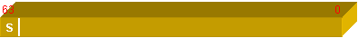

ITEEDU
第11章 数值运算协处理器
数值运算协处理器(简称协处理器)是特为与微处理器协同工作而设计的，它是用于加速处理浮点数据的处理部件。对同样的浮点计算，使用该部件进行运算所花的执行时间要比用常规指令编写的最有效代码所花的时间还要少得多。在早期的计算机系统中，该部件是可选部件，但现在一般都把协处理器直接内置在CPU之中。鉴于现在Pentium处理器内部结构的特点，该处理器能同时执行一条协处理器指令和二条整数指令。
协处理器的主要产品序列有：8087、80287、80387SX、80387DX和80487SX等。
协处理器可处理的数据类型有：16位、32位和64位有符号整数，18位BCD码，32位、64位和80位浮点数。
协处理器可处理的运算有：乘法、除法、加法、减法、求平方根、部分正切、部分反正切和对数等运算。11.1 协处理器的数据格式
在第4章，我们主要介绍了整数在内存中的存储形式，这显然不能满足实际编程的需要。数据类型的另一大类就是浮点数，浮点数在内存中的存储形式就是本节所介绍的主要内容。有关浮点数的存储格式在《计算机组成原理》中的有关章节也有详细说明，不太熟悉的读者可进行辅助阅读。
11.1.1 有符号整数
有符号数在协处理器中的应用与前面章节中所描述的方法是一致的，它是各种数据类型的基础。这些整数可分为：16位(字型)、32位(短整型)和64位(长整型)，其最高位为符号位。这些整数的数据格式如图11.1所示，它们所能表示的数据范围如表11.1所列。

(a) 字整型数据

(b) 短整型数据

(c) 长整型数据
图11.1 有符号整型数据的数据格式
表11.1 各类整型数据的表示范围
| 数据类型 | 范 围 |
| 字型 | -32768 ~ 32767 |
| 短整型 | -2147483648 ~ 2147483647 |
| 长整型 | -9×1018 ~ 9×1018 |
在汇编语言环境下，这三种整型数据的定义符分别为：DW、DD和DQ。如：
data1 DW 2, -340 ;16位整数
data2 DD 321, -320 ;短型整数
data3 DQ -1230, 9034 ;长型整数